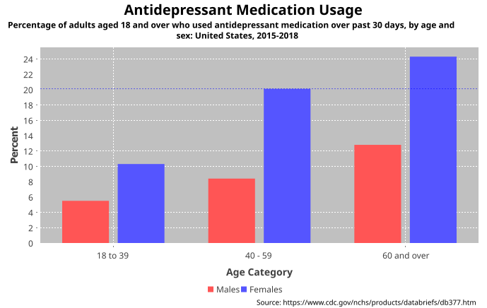

public class BarRenderer extends AbstractCategoryItemRenderer implements Cloneable, PublicCloneable, Serializable
CategoryItemRenderer that draws individual data items as bars.
The example shown here is generated by the BarChartDemo1.java
program included in the JFreeChart Demo Collection:

| Modifier and Type | Field and Description |
|---|---|
static double |
BAR_OUTLINE_WIDTH_THRESHOLD
Constant that controls the minimum width before a bar has an outline
drawn.
|
static double |
DEFAULT_ITEM_MARGIN
The default item margin percentage.
|
DEFAULT_ITEM_LABEL_INSETS, DEFAULT_OUTLINE_PAINT, DEFAULT_OUTLINE_STROKE, DEFAULT_PAINT, DEFAULT_SHAPE, DEFAULT_STROKE, DEFAULT_VALUE_LABEL_FONT, DEFAULT_VALUE_LABEL_PAINT, ZERO| Constructor and Description |
|---|
BarRenderer()
Creates a new bar renderer with default settings.
|
| Modifier and Type | Method and Description |
|---|---|
protected double[] |
calculateBarL0L1(double value)
Calculates the coordinates for the length of a single bar.
|
protected double |
calculateBarW0(CategoryPlot plot,
PlotOrientation orientation,
Rectangle2D dataArea,
CategoryAxis domainAxis,
CategoryItemRendererState state,
int row,
int column)
Calculates the coordinate of the first "side" of a bar.
|
protected void |
calculateBarWidth(CategoryPlot plot,
Rectangle2D dataArea,
int rendererIndex,
CategoryItemRendererState state)
Calculates the bar width and stores it in the renderer state.
|
protected double |
calculateSeriesWidth(double space,
CategoryAxis axis,
int categories,
int series)
Calculates the available space for each series.
|
void |
drawItem(Graphics2D g2,
CategoryItemRendererState state,
Rectangle2D dataArea,
CategoryPlot plot,
CategoryAxis domainAxis,
ValueAxis rangeAxis,
CategoryDataset dataset,
int row,
int column,
int pass)
Draws the bar for a single (series, category) data item.
|
protected void |
drawItemLabel(Graphics2D g2,
CategoryDataset data,
int row,
int column,
CategoryPlot plot,
CategoryItemLabelGenerator generator,
Rectangle2D bar,
boolean negative)
Draws an item label.
|
boolean |
equals(Object obj)
Tests this instance for equality with an arbitrary object.
|
Range |
findRangeBounds(CategoryDataset dataset,
boolean includeInterval)
Returns the range of values the renderer requires to display all the
items from the specified dataset.
|
BarPainter |
getBarPainter()
Returns the bar painter.
|
double |
getBase()
Returns the base value for the bars.
|
static BarPainter |
getDefaultBarPainter()
Returns the default bar painter.
|
static boolean |
getDefaultShadowsVisible()
Returns the default value for the
shadowsVisible flag. |
GradientPaintTransformer |
getGradientPaintTransformer()
Returns the gradient paint transformer (an object used to transform
gradient paint objects to fit each bar).
|
boolean |
getIncludeBaseInRange()
Returns the flag that controls whether or not the base value for the
bars is included in the range calculated by
AbstractCategoryItemRenderer.findRangeBounds(CategoryDataset). |
double |
getItemMargin()
Returns the item margin as a percentage of the available space for all
bars.
|
LegendItem |
getLegendItem(int datasetIndex,
int series)
Returns a legend item for a series.
|
double |
getLowerClip()
Returns the lower clip value.
|
double |
getMaximumBarWidth()
Returns the maximum bar width, as a percentage of the available drawing
space.
|
double |
getMinimumBarLength()
Returns the minimum bar length (in Java2D units).
|
ItemLabelPosition |
getNegativeItemLabelPositionFallback()
Returns the fallback position for negative item labels that don't fit
within a bar.
|
ItemLabelPosition |
getPositiveItemLabelPositionFallback()
Returns the fallback position for positive item labels that don't fit
within a bar.
|
Paint |
getShadowPaint()
Returns the shadow paint.
|
boolean |
getShadowsVisible()
Returns the flag that controls whether or not shadows are drawn for
the bars.
|
double |
getShadowXOffset()
Returns the shadow x-offset.
|
double |
getShadowYOffset()
Returns the shadow y-offset.
|
double |
getUpperClip()
Returns the upper clip value.
|
CategoryItemRendererState |
initialise(Graphics2D g2,
Rectangle2D dataArea,
CategoryPlot plot,
int rendererIndex,
PlotRenderingInfo info)
Initialises the renderer and returns a state object that will be passed
to subsequent calls to the drawItem method.
|
boolean |
isDrawBarOutline()
Returns a flag that controls whether or not bar outlines are drawn.
|
void |
setBarPainter(BarPainter painter)
Sets the bar painter for this renderer and sends a
RendererChangeEvent to all registered listeners. |
void |
setBase(double base)
Sets the base value for the bars and sends a
RendererChangeEvent
to all registered listeners. |
static void |
setDefaultBarPainter(BarPainter painter)
Sets the default bar painter.
|
static void |
setDefaultShadowsVisible(boolean visible)
Sets the default value for the shadows visible flag.
|
void |
setDrawBarOutline(boolean draw)
Sets the flag that controls whether or not bar outlines are drawn and
sends a
RendererChangeEvent to all registered listeners. |
void |
setGradientPaintTransformer(GradientPaintTransformer transformer)
Sets the gradient paint transformer and sends a
RendererChangeEvent to all registered listeners. |
void |
setIncludeBaseInRange(boolean include)
Sets the flag that controls whether or not the base value for the bars
is included in the range calculated by
AbstractCategoryItemRenderer.findRangeBounds(CategoryDataset). |
void |
setItemMargin(double percent)
Sets the item margin and sends a
RendererChangeEvent to all
registered listeners. |
void |
setMaximumBarWidth(double percent)
Sets the maximum bar width, which is specified as a percentage of the
available space for all bars, and sends a
RendererChangeEvent to
all registered listeners. |
void |
setMinimumBarLength(double min)
Sets the minimum bar length and sends a
RendererChangeEvent to
all registered listeners. |
void |
setNegativeItemLabelPositionFallback(ItemLabelPosition position)
Sets the fallback position for negative item labels that don't fit
within a bar, and sends a
RendererChangeEvent to all registered
listeners. |
void |
setPositiveItemLabelPositionFallback(ItemLabelPosition position)
Sets the fallback position for positive item labels that don't fit
within a bar, and sends a
RendererChangeEvent to all registered
listeners. |
void |
setShadowPaint(Paint paint)
Sets the shadow paint and sends a
RendererChangeEvent to all
registered listeners. |
void |
setShadowVisible(boolean visible)
Sets the flag that controls whether or not shadows are
drawn by the renderer.
|
void |
setShadowXOffset(double offset)
Sets the x-offset for the bar shadow and sends a
RendererChangeEvent to all registered listeners. |
void |
setShadowYOffset(double offset)
Sets the y-offset for the bar shadow and sends a
RendererChangeEvent to all registered listeners. |
addEntity, addItemEntity, beginElementGroup, calculateDomainMarkerTextAnchorPoint, calculateRangeMarkerTextAnchorPoint, clone, createState, drawBackground, drawDomainGridline, drawDomainMarker, drawItemLabel, drawOutline, drawRangeLine, drawRangeMarker, findRangeBounds, getColumnCount, getDefaultItemLabelGenerator, getDefaultItemURLGenerator, getDefaultToolTipGenerator, getDomainAxis, getDrawingSupplier, getItemLabelGenerator, getItemMiddle, getItemURLGenerator, getLegendItemLabelGenerator, getLegendItems, getLegendItemToolTipGenerator, getLegendItemURLGenerator, getPassCount, getPlot, getRangeAxis, getRowCount, getSeriesItemLabelGenerator, getSeriesItemURLGenerator, getSeriesToolTipGenerator, getToolTipGenerator, hashCode, setDefaultItemLabelGenerator, setDefaultItemLabelGenerator, setDefaultItemURLGenerator, setDefaultItemURLGenerator, setDefaultToolTipGenerator, setDefaultToolTipGenerator, setLegendItemLabelGenerator, setLegendItemToolTipGenerator, setLegendItemURLGenerator, setPlot, setSeriesItemLabelGenerator, setSeriesItemLabelGenerator, setSeriesItemURLGenerator, setSeriesItemURLGenerator, setSeriesToolTipGenerator, setSeriesToolTipGenerator, updateCrosshairValuesaddChangeListener, beginElementGroup, calculateLabelAnchorPoint, clearLegendShapes, clearLegendTextFonts, clearLegendTextPaints, clearSeriesFillPaints, clearSeriesItemLabelFonts, clearSeriesItemLabelPaints, clearSeriesItemLabelsVisible, clearSeriesOutlinePaints, clearSeriesOutlineStrokes, clearSeriesPaints, clearSeriesPositiveItemLabelPositions, clearSeriesShapes, clearSeriesStrokes, clearSeriesVisible, clearSeriesVisibleInLegend, endElementGroup, fireChangeEvent, getAutoPopulateSeriesFillPaint, getAutoPopulateSeriesOutlinePaint, getAutoPopulateSeriesOutlineStroke, getAutoPopulateSeriesPaint, getAutoPopulateSeriesShape, getAutoPopulateSeriesStroke, getDataBoundsIncludesVisibleSeriesOnly, getDefaultCreateEntities, getDefaultEntityRadius, getDefaultFillPaint, getDefaultItemLabelFont, getDefaultItemLabelPaint, getDefaultItemLabelsVisible, getDefaultLegendShape, getDefaultLegendTextFont, getDefaultLegendTextPaint, getDefaultNegativeItemLabelPosition, getDefaultOutlinePaint, getDefaultOutlineStroke, getDefaultPaint, getDefaultPositiveItemLabelPosition, getDefaultSeriesVisible, getDefaultSeriesVisibleInLegend, getDefaultShape, getDefaultStroke, getItemCreateEntity, getItemFillPaint, getItemLabelAnchorOffset, getItemLabelFont, getItemLabelInsets, getItemLabelPaint, getItemOutlinePaint, getItemOutlineStroke, getItemPaint, getItemShape, getItemStroke, getItemVisible, getLegendShape, getLegendTextFont, getLegendTextPaint, getNegativeItemLabelPosition, getPositiveItemLabelPosition, getSeriesCreateEntities, getSeriesFillPaint, getSeriesItemLabelFont, getSeriesItemLabelPaint, getSeriesNegativeItemLabelPosition, getSeriesOutlinePaint, getSeriesOutlineStroke, getSeriesPaint, getSeriesPositiveItemLabelPosition, getSeriesShape, getSeriesStroke, getSeriesVisible, getSeriesVisibleInLegend, getTreatLegendShapeAsLine, hasListener, isComputeItemLabelContrastColor, isItemLabelVisible, isSeriesItemLabelsVisible, isSeriesVisible, isSeriesVisibleInLegend, lookupLegendShape, lookupLegendTextFont, lookupLegendTextPaint, lookupSeriesFillPaint, lookupSeriesOutlinePaint, lookupSeriesOutlineStroke, lookupSeriesPaint, lookupSeriesShape, lookupSeriesStroke, notifyListeners, removeChangeListener, setAutoPopulateSeriesFillPaint, setAutoPopulateSeriesOutlinePaint, setAutoPopulateSeriesOutlineStroke, setAutoPopulateSeriesPaint, setAutoPopulateSeriesShape, setAutoPopulateSeriesStroke, setComputeItemLabelContrastColor, setDataBoundsIncludesVisibleSeriesOnly, setDefaultCreateEntities, setDefaultCreateEntities, setDefaultEntityRadius, setDefaultFillPaint, setDefaultFillPaint, setDefaultItemLabelFont, setDefaultItemLabelFont, setDefaultItemLabelPaint, setDefaultItemLabelPaint, setDefaultItemLabelsVisible, setDefaultItemLabelsVisible, setDefaultLegendShape, setDefaultLegendTextFont, setDefaultLegendTextPaint, setDefaultNegativeItemLabelPosition, setDefaultNegativeItemLabelPosition, setDefaultOutlinePaint, setDefaultOutlinePaint, setDefaultOutlineStroke, setDefaultOutlineStroke, setDefaultPaint, setDefaultPaint, setDefaultPositiveItemLabelPosition, setDefaultPositiveItemLabelPosition, setDefaultSeriesVisible, setDefaultSeriesVisible, setDefaultSeriesVisibleInLegend, setDefaultSeriesVisibleInLegend, setDefaultShape, setDefaultShape, setDefaultStroke, setDefaultStroke, setItemLabelAnchorOffset, setItemLabelInsets, setLegendShape, setLegendTextFont, setLegendTextPaint, setSeriesCreateEntities, setSeriesCreateEntities, setSeriesFillPaint, setSeriesFillPaint, setSeriesItemLabelFont, setSeriesItemLabelFont, setSeriesItemLabelPaint, setSeriesItemLabelPaint, setSeriesItemLabelsVisible, setSeriesItemLabelsVisible, setSeriesItemLabelsVisible, setSeriesNegativeItemLabelPosition, setSeriesNegativeItemLabelPosition, setSeriesOutlinePaint, setSeriesOutlinePaint, setSeriesOutlineStroke, setSeriesOutlineStroke, setSeriesPaint, setSeriesPaint, setSeriesPositiveItemLabelPosition, setSeriesPositiveItemLabelPosition, setSeriesShape, setSeriesShape, setSeriesStroke, setSeriesStroke, setSeriesVisible, setSeriesVisible, setSeriesVisibleInLegend, setSeriesVisibleInLegend, setTreatLegendShapeAsLinefinalize, getClass, notify, notifyAll, toString, wait, wait, waitcloneaddChangeListener, getDefaultCreateEntities, getDefaultFillPaint, getDefaultItemLabelFont, getDefaultItemLabelPaint, getDefaultItemLabelsVisible, getDefaultNegativeItemLabelPosition, getDefaultOutlinePaint, getDefaultOutlineStroke, getDefaultPaint, getDefaultPositiveItemLabelPosition, getDefaultSeriesVisible, getDefaultSeriesVisibleInLegend, getDefaultShape, getDefaultStroke, getItemCreateEntity, getItemFillPaint, getItemLabelFont, getItemLabelPaint, getItemOutlinePaint, getItemOutlineStroke, getItemPaint, getItemShape, getItemStroke, getItemVisible, getNegativeItemLabelPosition, getPositiveItemLabelPosition, getSeriesCreateEntities, getSeriesFillPaint, getSeriesItemLabelFont, getSeriesItemLabelPaint, getSeriesNegativeItemLabelPosition, getSeriesOutlinePaint, getSeriesOutlineStroke, getSeriesPaint, getSeriesPositiveItemLabelPosition, getSeriesShape, getSeriesStroke, getSeriesVisible, getSeriesVisibleInLegend, isItemLabelVisible, isSeriesItemLabelsVisible, isSeriesVisible, isSeriesVisibleInLegend, removeChangeListener, setDefaultCreateEntities, setDefaultCreateEntities, setDefaultFillPaint, setDefaultItemLabelFont, setDefaultItemLabelFont, setDefaultItemLabelPaint, setDefaultItemLabelPaint, setDefaultItemLabelsVisible, setDefaultItemLabelsVisible, setDefaultNegativeItemLabelPosition, setDefaultNegativeItemLabelPosition, setDefaultOutlinePaint, setDefaultOutlinePaint, setDefaultOutlineStroke, setDefaultOutlineStroke, setDefaultPaint, setDefaultPaint, setDefaultPositiveItemLabelPosition, setDefaultPositiveItemLabelPosition, setDefaultSeriesVisible, setDefaultSeriesVisible, setDefaultSeriesVisibleInLegend, setDefaultSeriesVisibleInLegend, setDefaultShape, setDefaultShape, setDefaultStroke, setDefaultStroke, setSeriesCreateEntities, setSeriesCreateEntities, setSeriesFillPaint, setSeriesItemLabelFont, setSeriesItemLabelFont, setSeriesItemLabelPaint, setSeriesItemLabelPaint, setSeriesItemLabelsVisible, setSeriesItemLabelsVisible, setSeriesItemLabelsVisible, setSeriesNegativeItemLabelPosition, setSeriesNegativeItemLabelPosition, setSeriesOutlinePaint, setSeriesOutlinePaint, setSeriesOutlineStroke, setSeriesOutlineStroke, setSeriesPaint, setSeriesPaint, setSeriesPositiveItemLabelPosition, setSeriesPositiveItemLabelPosition, setSeriesShape, setSeriesShape, setSeriesStroke, setSeriesStroke, setSeriesVisible, setSeriesVisible, setSeriesVisibleInLegend, setSeriesVisibleInLegendpublic static final double DEFAULT_ITEM_MARGIN
public static final double BAR_OUTLINE_WIDTH_THRESHOLD
public BarRenderer()
public static BarPainter getDefaultBarPainter()
public static void setDefaultBarPainter(BarPainter painter)
painter - the painter (null not permitted).public static boolean getDefaultShadowsVisible()
shadowsVisible flag.setDefaultShadowsVisible(boolean)public static void setDefaultShadowsVisible(boolean visible)
visible - the new value for the default.getDefaultShadowsVisible()public double getBase()
0.0.setBase(double)public void setBase(double base)
RendererChangeEvent
to all registered listeners.base - the new base value.getBase()public double getItemMargin()
setItemMargin(double)public void setItemMargin(double percent)
RendererChangeEvent to all
registered listeners. The value is expressed as a percentage of the
available width for plotting all the bars, with the resulting amount to
be distributed between all the bars evenly.percent - the margin (where 0.10 is ten percent).getItemMargin()public boolean isDrawBarOutline()
setDrawBarOutline(boolean)public void setDrawBarOutline(boolean draw)
RendererChangeEvent to all registered listeners.draw - the flag.isDrawBarOutline()public double getMaximumBarWidth()
setMaximumBarWidth(double)public void setMaximumBarWidth(double percent)
RendererChangeEvent to
all registered listeners.percent - the percent (where 0.05 is five percent).getMaximumBarWidth()public double getMinimumBarLength()
setMinimumBarLength(double)public void setMinimumBarLength(double min)
RendererChangeEvent to
all registered listeners. The minimum bar length is specified in Java2D
units, and can be used to prevent bars that represent very small data
values from disappearing when drawn on the screen. Typically you would
set this to (say) 0.5 or 1.0 Java 2D units. Use this attribute with
caution, however, because setting it to a non-zero value will
artificially increase the length of bars representing small values,
which may misrepresent your data.min - the minimum bar length (in Java2D units, must be >= 0.0).getMinimumBarLength()public GradientPaintTransformer getGradientPaintTransformer()
null possible).setGradientPaintTransformer(GradientPaintTransformer)public void setGradientPaintTransformer(GradientPaintTransformer transformer)
RendererChangeEvent to all registered listeners.transformer - the transformer (null permitted).getGradientPaintTransformer()public ItemLabelPosition getPositiveItemLabelPositionFallback()
null possible).setPositiveItemLabelPositionFallback(ItemLabelPosition)public void setPositiveItemLabelPositionFallback(ItemLabelPosition position)
RendererChangeEvent to all registered
listeners.position - the position (null permitted).getPositiveItemLabelPositionFallback()public ItemLabelPosition getNegativeItemLabelPositionFallback()
null possible).setPositiveItemLabelPositionFallback(ItemLabelPosition)public void setNegativeItemLabelPositionFallback(ItemLabelPosition position)
RendererChangeEvent to all registered
listeners.position - the position (null permitted).getNegativeItemLabelPositionFallback()public boolean getIncludeBaseInRange()
AbstractCategoryItemRenderer.findRangeBounds(CategoryDataset).true if the base is included in the range, and
false otherwise.setIncludeBaseInRange(boolean)public void setIncludeBaseInRange(boolean include)
AbstractCategoryItemRenderer.findRangeBounds(CategoryDataset). If the flag is changed,
a RendererChangeEvent is sent to all registered listeners.include - the new value for the flag.getIncludeBaseInRange()public BarPainter getBarPainter()
null).setBarPainter(BarPainter)public void setBarPainter(BarPainter painter)
RendererChangeEvent to all registered listeners.painter - the painter (null not permitted).getBarPainter()public boolean getShadowsVisible()
public void setShadowVisible(boolean visible)
visible - the new flag value.public Paint getShadowPaint()
setShadowPaint(Paint)public void setShadowPaint(Paint paint)
RendererChangeEvent to all
registered listeners.paint - the paint (null not permitted).getShadowPaint()public double getShadowXOffset()
public void setShadowXOffset(double offset)
RendererChangeEvent to all registered listeners.offset - the offset.public double getShadowYOffset()
public void setShadowYOffset(double offset)
RendererChangeEvent to all registered listeners.offset - the offset.public double getLowerClip()
public double getUpperClip()
public CategoryItemRendererState initialise(Graphics2D g2, Rectangle2D dataArea, CategoryPlot plot, int rendererIndex, PlotRenderingInfo info)
initialise in interface CategoryItemRendererinitialise in class AbstractCategoryItemRendererg2 - the graphics device.dataArea - the area in which the data is to be plotted.plot - the plot.rendererIndex - the renderer index.info - collects chart rendering information for return to caller.protected void calculateBarWidth(CategoryPlot plot, Rectangle2D dataArea, int rendererIndex, CategoryItemRendererState state)
plot - the plot.dataArea - the data area.rendererIndex - the renderer index.state - the renderer state.protected double calculateBarW0(CategoryPlot plot, PlotOrientation orientation, Rectangle2D dataArea, CategoryAxis domainAxis, CategoryItemRendererState state, int row, int column)
plot - the plot.orientation - the plot orientation.dataArea - the data area.domainAxis - the domain axis.state - the renderer state (has the bar width precalculated).row - the row index.column - the column index.protected double[] calculateBarL0L1(double value)
value - the value represented by the bar.null if
the bar is not visible for the current axis range).public Range findRangeBounds(CategoryDataset dataset, boolean includeInterval)
findRangeBounds in class AbstractCategoryItemRendererdataset - the dataset (null permitted).includeInterval - include the interval if the dataset has one?null if the dataset is
null or empty).public LegendItem getLegendItem(int datasetIndex, int series)
getLegendItem in interface CategoryItemRenderergetLegendItem in class AbstractCategoryItemRendererdatasetIndex - the dataset index (zero-based).series - the series index (zero-based).null).AbstractCategoryItemRenderer.getLegendItems()public void drawItem(Graphics2D g2, CategoryItemRendererState state, Rectangle2D dataArea, CategoryPlot plot, CategoryAxis domainAxis, ValueAxis rangeAxis, CategoryDataset dataset, int row, int column, int pass)
drawItem in interface CategoryItemRendererg2 - the graphics device.state - the renderer state.dataArea - the data area.plot - the plot.domainAxis - the domain axis.rangeAxis - the range axis.dataset - the dataset.row - the row index (zero-based).column - the column index (zero-based).pass - the pass index.protected double calculateSeriesWidth(double space, CategoryAxis axis, int categories, int series)
space - the space along the entire axis (in Java2D units).axis - the category axis.categories - the number of categories.series - the number of series.protected void drawItemLabel(Graphics2D g2, CategoryDataset data, int row, int column, CategoryPlot plot, CategoryItemLabelGenerator generator, Rectangle2D bar, boolean negative)
g2 - the graphics device.data - the dataset.row - the row.column - the column.plot - the plot.generator - the label generator.bar - the bar.negative - a flag indicating a negative value.public boolean equals(Object obj)
equals in class AbstractCategoryItemRendererobj - the object (null permitted).Copyright © 2001–2025 JFree.org. All rights reserved.